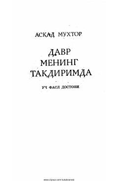

DMAsqad Muxtorning zamon va inson taqdiriga bag'ishlangan uch fasldan iborat dostoni.
Ushbu asar taniqli o'zbek yozuvchisi va shoiri Asqad Muxtor qalamiga mansub bo'lib, uch fasldan iborat dostondir. Kitobda inson taqdiri, zamon va davr ruhi hamda hayotiy falsafiy mushohazalar chuqur ifodalangan.